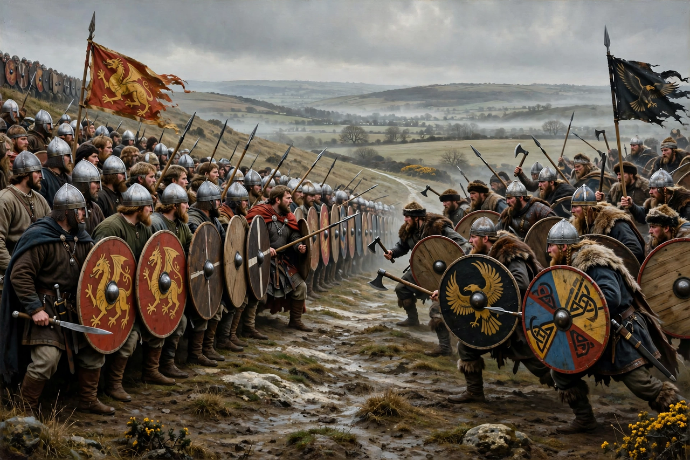

Battle of Edington
At the Battle of Edington, an army of the kingdom of Wessex under Alfred the Great defeated the Great Heathen Army led by the Dane Guthrum on a date probably between 6 and 12 May 878. The result was the Treaty of Wedmore later the same year, in which Guthrum agreed to be baptised and to withdraw from Wessex to East Anglia, a settlement later formalised in the boundary between Alfred's kingdom and the Danelaw.
 | |
| Date | May 878 |
|---|---|
| Location | Probably Edington, Wiltshire |
| Result | Decisive West Saxon victory; Treaty of Wedmore |
| Belligerents | Kingdom of Wessex — Great Heathen Army (Danes) |
| Commanders | Alfred the Great — Guthrum |
Background
The Viking Great Heathen Army had invaded England in 865 and overrun Northumbria, East Anglia and much of Mercia. Wessex survived the first assaults, but in January 878 Guthrum launched a surprise mid-winter attack on Alfred's royal vill at Chippenham, driving the king into hiding in the marshes of the Somerset Levels at Athelney. From his island stronghold Alfred conducted guerrilla resistance while quietly rebuilding his forces.
The battle
In the seventh week after Easter, Alfred rode to Egbert's Stone, east of Selwood Forest, where the fyrd of Somerset, Wiltshire and part of Hampshire assembled. The army marched to Iley Oak and then to Edington (Ethandun in the Anglo-Saxon Chronicle), where it met Guthrum's forces. According to Asser's Life of King Alfred, the West Saxons fought fiercely in a dense shield wall and, "by God's will", routed the Danes, pursuing them to their fortress at Chippenham, which they besieged for fourteen days until the starving garrison surrendered.
Aftermath
Guthrum and thirty of his leading men were baptised at Aller, with Alfred standing as sponsor; Guthrum took the baptismal name Æthelstan. The subsequent Treaty of Wedmore and the later Alfred–Guthrum treaty fixed a boundary running up the Thames and the Lea to Watling Street, dividing England between Wessex and the Danelaw. Edington is generally regarded as one of the most decisive battles in English history: had Alfred lost, no English kingdom would have remained capable of resisting the Viking conquest.
Location debate
The battle is traditionally identified with Edington in Wiltshire, a view supported by the geography of Alfred's march from Athelney; an alternative candidate, Edington in Somerset, has occasionally been proposed but commands less support.
See also
Categories: 878 · Battles involving Wessex · Battles involving the Vikings · Alfred the Great